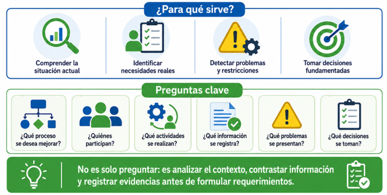
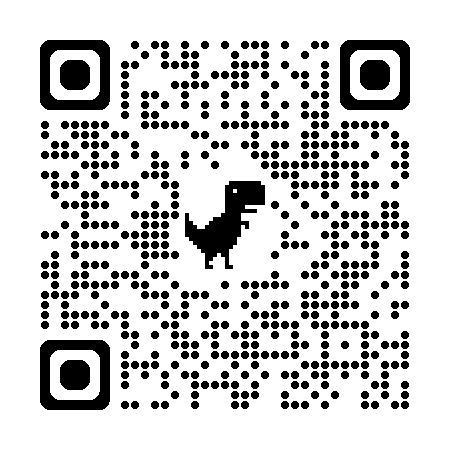
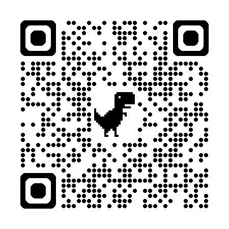

🚀¡Bienvenido a la Misión Analista!
Alguna vez te has preguntado cómo los creadores de software saben exactamente qué programar? 💻 ¡No es por arte de magia! Antes de escribir una sola línea de código, existe una fase crucial llamada levantamiento de información.
Imagina que eres un detective. Tu misión no es atrapar a un villano, sino entender cómo funciona una organización, qué problemas tienen los usuarios del día a día y qué necesitan realmente para hacer su vida más fácil con la tecnología.
Para lograrlo, no puedes usar una sola técnica. Debes ser versátil: conversar cara a cara con las personas, enviar encuestas masivas, observar cómo trabajan en tiempo real y desempolvar antiguos manuales y documentos. ¡La combinación de estas técnicas te dará el mapa exacto para construir una solución perfecta! 🗺️

✨ Al terminar este recorrido, tendrás los superpoderes necesarios para elegir las mejores herramientas de recolección de datos y diseñar tus propios cuestionarios profesionales. ¡Tu camino como analista estrella comienza aquí!
💡 ¿Sabías qué?
Según estudios de la industria del software, más del 45% de los proyectos tecnológicos fallan o superan su presupuesto inicial no por mala programación, sino por requerimientos mal definidos y falta de entendimiento de lo que los usuarios realmente necesitaban. ¡Hacer un buen levantamiento de información ahorra millones y evita frustraciones! 🛡️
Objetivos de aprendizaje
Reconocer las distintas técnicas de levantamiento de información utilizadas en el análisis: entrevistas, encuestas, observación y revisión documental.
Seleccionar la técnica más adecuada de acuerdo con el tipo de actor, el contexto organizacional, el tipo de información requerida y el propósito del análisis.
Diseñar instrumentos básicos de recolección de datos (guías de entrevista, cuestionarios, formatos de observación y fichas) con criterios de claridad, ética y respeto.
Rango de Analista
Investigador Novato 🔎
Guía práctica de Entrevistas de Requerimientos
🔍 Búsqueda sugerida: "entrevista requerimientos de software analista de sistemas"
▶️ Ver recurso🔧 Cómo activar este recurso:
Busca el video o recurso y dile esto a tu agente de IA en el chat:
Clase Completa: Técnicas de Levantamiento de Información
🔍 Búsqueda sugerida: "tecnicas de levantamiento de informacion analisis de sistemas"
▶️ Ver recurso🔧 Cómo activar este recurso:
Busca el video o recurso y dile esto a tu agente de IA en el chat:
✍️ Centro de Misiones Prácticas
Completa tus misiones, digita tus propuestas y gana insignias especiales de analista. ¡Cada misión completada te otorga +20 ⭐!
Tus Medallas Obtener:
🕵️ Misión 1: Diseño de una Guía de Entrevista
Selecciona uno de estos sistemas: Citas Médicas, Control de Inventario o Préstamo de Libros. Identifica un actor, define el objetivo de la entrevista y escribe una guía con mínimo 10 preguntas estructuradas según tu rol (3 de rol, 3 del proceso actual, 2 de problemas y 2 de mejoras).
📝 Tu propuesta o borrador de entrevista:
📋 Misión 2: Cuestionario de Encuesta
Diseña una encuesta completa con **mínimo 12 preguntas** (4 cerradas, 3 de escala, 3 de selección múltiple, y 2 abiertas) para identificar problemas y expectativas del usuario final en tu caso elegido.
📝 Tu propuesta de cuestionario:
🔍 Misión 3: Formato de Observación y Ficha Documental
Elige un proceso simulado y diseña un formato de observación de campo detallando fecha, actores, herramientas usadas y problemas detectados. Añade una ficha de revisión documental analizando 2 documentos implicados.
📝 Tu formato de campo y ficha documental:
✔️ Evaluación de Habilidades
Comprueba qué tanto has dominado las técnicas de levantamiento. Selecciona la respuesta correcta de cada una de las 5 preguntas de dificultad progresiva.
📖 Recursos para profundizar
Para ampliar tu conocimiento sobre análisis de requerimientos de software y levantamiento de información, te recomendamos explorar los siguientes recursos:
-
IEEE SWEBOK Guide v4.0
Guía del Cuerpo de Conocimiento de Ingeniería de Software, estándar internacional.
Ir al recurso
-
Análisis y Diseño de Sistemas Modernos
Libro de Valacich & George en la tienda educativa Pearson.
Ir al recurso
Bibliografía
https://www.computer.org/education/bodies-of-knowledge/software-engineering
https://www.pearson.com/en-us/subject-catalog/p/software-engineering/P200000003284
https://www.pearson.com/en-us/subject-catalog/p/modern-systems-analysis-and-design/P200000003292